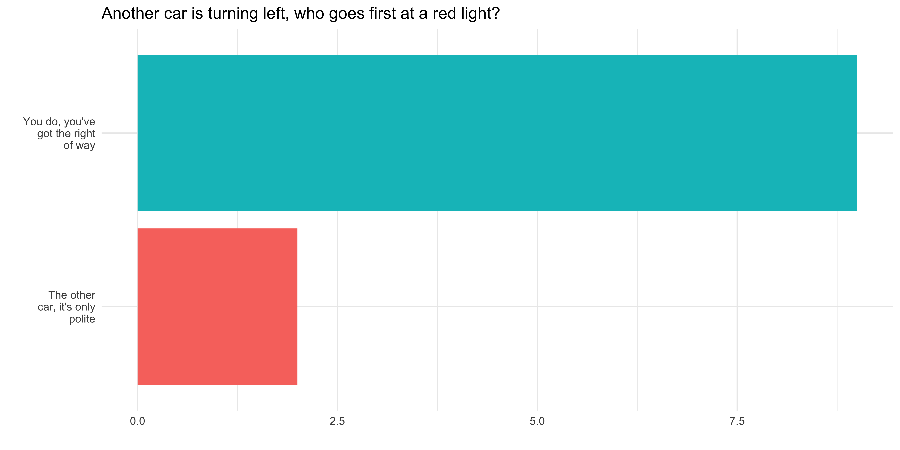
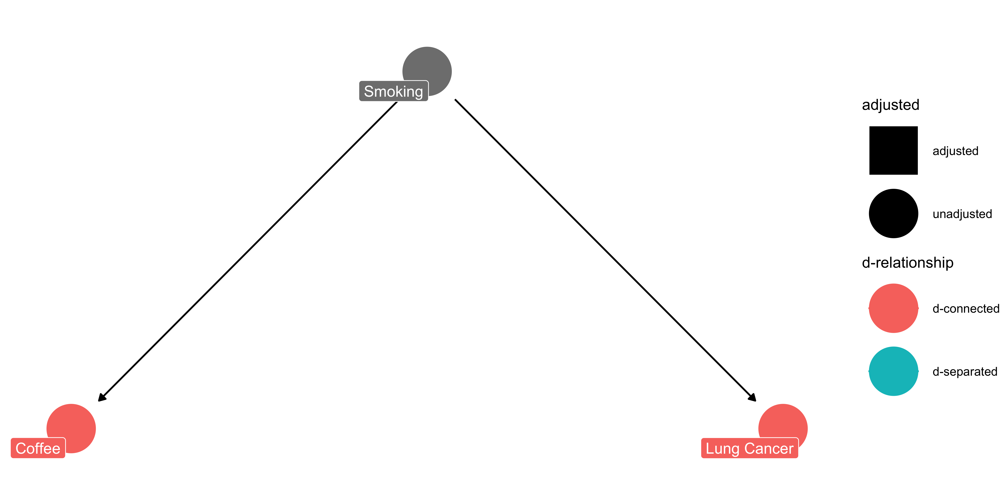
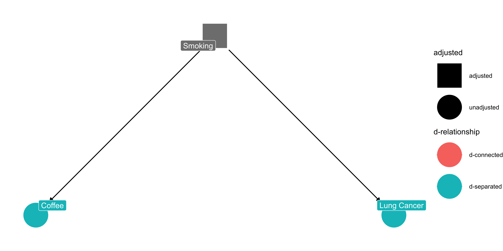
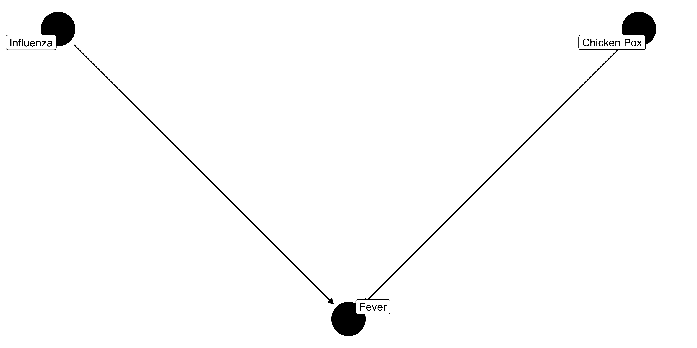
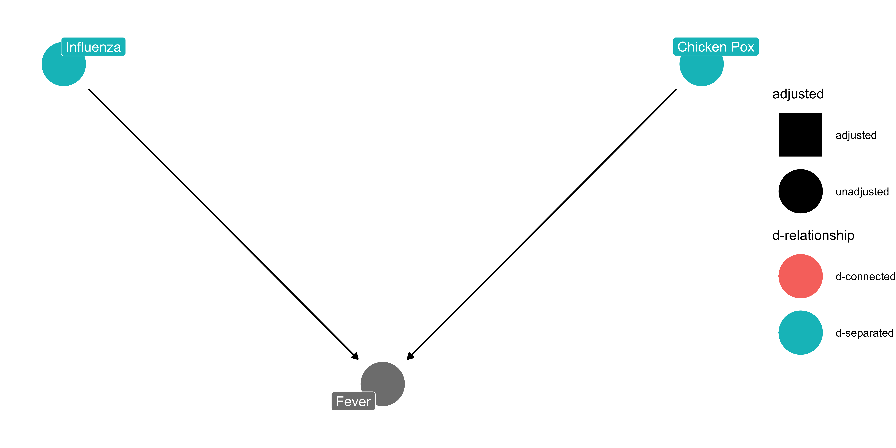
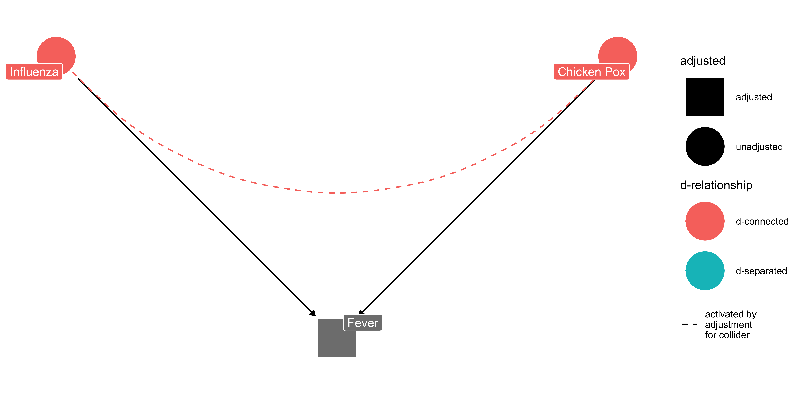

Week 03:
Casual Inference in Experimental Designs
Paul Testa
class: inverse, center, middle # Overview
General Plan
- Groups, Labs & Tutorials
- Feedback
- Review
- Lecture:
- Causal inference
- Notations to describe causal claims
- Causal Identification
- Causal Identification in experimental designs
Group Assignments
Labs & Tutorials
- Upload Lab 2 if you haven’t done so already
- Same for Tutorials 0, 1, 2.
- Some confusion on what to upload, so let’s do a quick demo.
class: inverse, center, middle background-image:url(“https://m.media-amazon.com/images/I/51vs7dtZnZL._AC_.jpg”) background-size:contain
Feedback
What do we like
What do we dislike
Learning to code:
- Thinking programattically
- Chunk big problems into concrete tasks
- Use R Markdown to organize your code
- Learn to troubleshoot errors
- Don’t be afraid to FAAFO
Who’s got the right of way?
# Data
df %>%
mutate(
Turn = str_wrap(as_factor(Turn), width = 15)
)%>%
# Aesthetics
ggplot(aes(Turn,fill=Turn))+
# Geometries
geom_bar(stat="count")+
# Other layers
coord_flip()+
guides(fill =F)+
theme_minimal()+
labs(y="",
x="",
title = "Another car is turning left, who goes first at a red light?")Who’s got the right of way?
Review
- Set up
- Data wrangling
- Data visualization
Setup
Every time you work in R
Save your file to your course or project folder
Set your working directory
Load, and if needed, install packages
Maybe change some global options in your .Rmd file
Setting your working directory:
- My default code for setting a working directory is:
This is really just a reminder to someone else using my code that they need to have their working directories set up correctly
R Studio sets the working directory automatically, when you knit the file
When I work on a file, I set the working directory manually
Setting your working directory when working “Live”

Packages for today
Define a function to load (and if needed install) packages
Load packages for today
kableExtra DT tidyverse lubridate forcats haven labelled
TRUE TRUE TRUE TRUE TRUE TRUE TRUE
ggmap ggrepel ggridges ggthemes ggpubr GGally scales
TRUE TRUE TRUE TRUE TRUE TRUE TRUE
dagitty ggdag COVID19 maps mapdata qss
TRUE TRUE TRUE TRUE TRUE TRUE class:inverse, center, middle # 💪 ## Load the Covid-19 Data
Load the Covid-19 Data
Filter the Covid-19 Data to include Just US States
# Vector containing of US territories
territories <- c(
"American Samoa",
"Guam",
"Northern Mariana Islands",
"Puerto Rico",
"Virgin Islands"
)
# Filter out Territories and create state variable
covid_us <- covid %>%
filter(!administrative_area_level_2 %in% territories)%>%
mutate(
state = administrative_area_level_2
)Setting global options
- Lets you control the default behavior of R and R Markdown
- Do you want to print warnings when you knit?
- How big should your figures be
- I’ll typically set these for you
The global options for these slides
Cacheing
Sometimes I will turn cacheing on (
cache=TRUE)When you knit with cache-ing, R saves the output of each codechunk
The next time you knit, if the code in a code chunk hasn’t changed, R just loads the saved output from the previous session, rather than re-running the code.
This is useful when a chunk of code takes a long time to run
This can potentially create errors, if you change something in one code chunk, but subsequent code are unchanged and load older versions of your code, that don’t have the thing you changed.
If this happens, try turning off the cacheing (
cache=F) and rerunning your code. If your code works, can turn cache-ing back on.
Data transformations
You want to:
Load some data
Combine multiple functions
Look at your data
Recode your data
Transform your data
Data transformations
.pull-left[ You want to:
Load some data
Combine multiple functions
Look at your data
Recode your data
Transform your data ]
.pull-right[ You could use
read_*functions%>%the “pipe” operatorglimpse()head(),filter(),select(),arrange()mutate(),case_when(),ifelse()summarize(),group_by()
]
🔍
Recoding categorical data in R
Let’s clarify what’s going on when we create the face_masks variable from the facial_coverings variable
- Why are we doing this
- What does
mutate()do - What does
case_when()do - What does
factor()do
Why are we doing this?
When we looked at the raw data, facial_coverings was a numeric variable with both positive and negative values
Why are we doing this?
Substantively, the absolute value of these numeric values correspond to increasingly restrictive face mask policies:
- 0 - No policy
- 1 - Recommended
- 2 - Required in some specified shared/public spaces outside the home with other people present, or some situations when social distancing not possible
- 3 - Required in all shared/public spaces outside the home with other people present or all situations when social distancing not possible
- 4 - Required outside the home at all times regardless of location or presence of other people
With negative values denoting “best guesses” of the policy in effect for most people in a state - Example: Illinois is coded as a negative 4 when Chicago adopts a stringent face mask policy
Why are we doing this?
- The numbers for these policies reflect an ordinal ranking:
- No policy is less restrictive than Recommendations is less restrictive than requirements …
- Beyond this ordering, the numbers themselves don’t convey any additional meaning:
- A partial requirement (2) is not “twice as restrictive” as a recommendation (1).
- How to treat statewide policies (positive numbers) vs mixed regimes (negative) is tricky
- Ideally, we’d use more granular data (e.g. counties)
- In practice, we’ll collapse this distinction in our code
- As social scientists, we’d then want explore how our results change using alternative coding rules
- By converting the numeric
facial_coveringsvariable into the categorical, ordered factorface_maskswe get a variable that:- Has meaningful labels
- Retains the substantive ordering of policies
Creating the face_masks variable
Here’s the snippet of code I’ve given you in the past:
covid_us %>%
mutate(
face_masks = case_when(
facial_coverings == 0 ~ "No policy",
abs(facial_coverings) == 1 ~ "Recommended",
abs(facial_coverings) == 2 ~ "Some requirements",
abs(facial_coverings) == 3 ~ "Required shared places",
abs(facial_coverings) == 4 ~ "Required all times",
) %>% factor(.,
levels = c("No policy","Recommended",
"Some requirements",
"Required shared places",
"Required all times")
)
) -> covid_usCreating the face_masks variable
Here’s a slightly clearer way of doing the same thing
covid_us %>%
mutate(
# Recode facial_coverings to create face_masks
face_masks = case_when(
facial_coverings == 0 ~ "No policy",
abs(facial_coverings) == 1 ~ "Recommended",
abs(facial_coverings) == 2 ~ "Some requirements",
abs(facial_coverings) == 3 ~ "Required shared places",
abs(facial_coverings) == 4 ~ "Required all times",
),
# Turn face_masks into a factor with ordered policy levels
face_masks = factor(face_masks,
levels = c("No policy","Recommended",
"Some requirements",
"Required shared places",
"Required all times")
)
) -> covid_usUnderstanding what case_when() does
Let’s take a (pseudo) random slice of our data:
set.seed(123)
covid_us %>%
select(date, state, facial_coverings, face_masks)%>%
slice(sample(1:dim(covid_us)[1], size=10, replace = F)) date state facial_coverings face_masks
1 2020-04-26 Maryland 2 Some requirements
2 2022-04-25 Florida 1 Recommended
3 2020-12-16 Tennessee -3 Required shared places
4 2020-05-15 Tennessee 1 Recommended
5 2021-09-18 Arkansas -2 Some requirements
6 2021-09-08 Florida -2 Some requirements
7 2020-07-11 Alaska -3 Required shared places
8 2020-07-07 New Hampshire -2 Some requirements
9 2022-09-11 Nebraska 2 Some requirements
10 2020-04-06 Oregon 1 RecommendedUnderstanding all that other stuff did
.pull-left[ - set.seed(123) sets the “seed” that your computer uses to generate pseudo random numbers - select() selects just the date, state, facial_coverings, and face_masks columns from the data - slice() selects a slice of rows from the data - sample() takes random sample from the sequence of numbers 1 to 40,889 (dim(covid_us)) of size 10, without replacement (no duplicates), which slice() interprets as the rows you want to select
]
.pull-right[
]
Data visualization
A basic graphic requires at minimum:
data:the dataset containing the variables of interest.aes: aesthetic attributes of the geometric object. For example, x/y position, color, shape, and size. Aesthetic attributes are mapped to variables in the dataset.geom:the geometric object in question. This refers to the type of object we can observe in a plot For example: points, lines, and bars.
Data visualization
Basic graphics are made even better with:
facetsstatisticscoordinatesthemes
Topics
Causal inference
Notations to describe causal claims
- Potential Outcomes
- Directed Acyclic Graphs
Causal Identification
- Experimental designs (this week)
- Observational designs (next week)
Causal Identification in Experimental Designs
- How random assignment creates credible counter factual comparisons
Exercises
What kinds questions have causal interpretations?
Estimating an average treatment effect with the
resumedataExploring the data for Broockman and Kalla 2016
class: inverse, center, middle # 💡 # Causal Inference ## Causal claims imply counterfactual comparisons
Causal claims imply counterfactual comparisons
- Causal claims imply claims about counterfactuals
- What would have happened if we were to change some aspect of the world?
–
What’s the counter factual for these claims:
–
- Foreign aid increases develop
–
- Wikileaks cost Hillary Clinton the 2016 election
–
- Democracies don’t fight wars with other democracies
–
- Universal Pre-K improves child development
Casual claims are are all around us
.pull-left[

]
–
.pull-right[

]
Casual claims are are all around us
What are some questions that interest you?
What are the counterfactual comparisons they imply?
class: inverse, center, middle # 💡 # Notations to describe causal claims
In this course, we will use two forms of notation to describe our causal claims.
Directed Acyclic Graphs
Potential Outcomes Notation
Directed Acyclic Graphs
Directed Acyclic Graphs provide a way of encoding assumptions about casual relationships
Directed Arrows \(\to\) describe a direct causal effect
Arrow from \(D\to Y\) means \(Y_i(d) \neq Y_i(d^\prime)\) “The outcome ( \(Y\)) for person \(i\) when D happens ( \(Y_i(d)\) ) is different than the the outcome when \(D\) doesn’t happen ( \(Y_i(d^\prime)\) )
No arrow = no effect ( \(Y_i(d) = Y_i(d^\prime)\) )
Acyclic: No cycles. A variable can’t cause itself
Used by Pearl (2009, 2017) to describe and assess causal structural models
Basically, they’re math’s fancy pants version of a flow chart
Why we use Directed Acyclic Graphs
Directed Acyclic Graphs are flexible ways of representing complex relationships
They’re great for illustrating sources of potential bias in our models:
Two types of bias we’ll talk about today:
Confounder bias: Bias that exists because two variables have a common cause
Collider bias: Bias we create when we condition on a common consequence
What do we mean by bias
We’ll talk about lots of types of bias throughout this course.
Formally, we’ll say an estimate, \(\hat{\theta}\) (“theta hat”) is an unbiased estimator of a parameter, \(\theta\) (“theta”) if:
\[ E[\hat{\theta}] = \theta \]
Bias or error, \(\epsilon\), is the difference between our estimate and the truth
\[ \epsilon = \hat{\theta} -\theta \]
An estimator is unbiased if, on average, the errors equal 0
\[ E[\epsilon] = E[\hat{\theta} -\theta] = 0 \]
Bias vs. variance

The Bias-Variance Tradeoff

Drawing DAGs in R
Let’s draw some dags to consider some simple examples:
Does drinking coffee cause lung cancer? (Confounding bias)
Does chicken pox cause influenza? (Collider bias)
Nice examples of DAGs from ggdag
Confounding = Common Causes

Controlling for a confounding variable

Colliders = Common Consequence

Don’t Condition on a Collider

Don’t Condition on a Collider

Potential Outcomes
DAGs are great for representing a wide array of relationships
Doing causal inference with DAGs is a bit beyond the scope of this class
Instead, we’ll typically talk about causal claims using the logic of potential outcomes to describe the counterfactual comparisons we want to make.
To do this, we’ll need to get comfortable with some basic notation.
Some general notes on notation
Notation can seem scary, overwhelming, confusing.
Notation can be incredibly helpful for communicating precisely and clearly
Our goal is to demystify notation
General Notation: Populations and Samples
- \(U\): Population of units:
- Finite population \(U = {1,2,3,\dots,N}\)
- Infinite super population \(U = {1,2,3,\dots,\infty}\)
- \(S\): sample of size \(n\) from population \(U\)
General Notation: Outcome Variables
- \(Y_i\): Observed outcome from unit \(i\)
- \(Y_i\) might be whether persion \(i\), call them Paul has Covid while \(Y_j\) would be whether person \(j\), call them Aleks has Covid
General Notation: Treatment Variables
- \(D_i\): An indicator for the receipt of treatment. \(D_i\) = 1 if treated, \(D_i\) = 0 if untreated,
- \(D_i = 0\) means Paul got the placebo in a vaccine trial
- \(D_i = 1\) means Paul got the vaccine
- Generalizes to multiple treatments \(D \in \{0,1,2,3, \dots\}\)
- \(Z_i\): An indicator for the assignment of treatment. \(Z_i\) = 1 if assigned to treatment, \(Z_i\) = 0 if assigned to control,
- \(Z_i = 1\) means Paul was assigned to receive the vaccine. Whether Paul got the vaccine depends on \(D_i\)
General Notation: Observed and Unobserved Covariates
- \(X_i\) pre-treatment covariates.
- \(X_i\) might be Paul’s age, or gender, or partisan affiliation
- Pre-treatment refers to things that are determined before the treatment is assigned and therefore cannot be influenced by the treatment
- \(U_i\) unobserved potential confounds
- \(_i\) might be something we didn’t or can’t measure like Paul’s genome or general crankiness
General Notation: Expected Values
The \(E[Y]\) reads as “the expected value of Y”
\(E[Y]\) is defined as a probability weighted average based on the uncoditional probability of Y ( \(f(y)\) )
\[\operatorname{E}[Y] = \int_{-\infty}^\infty y f(y)\, dy\]
General Notation: Conditional Expectations
The \(E[Y|X=x]\) reads as “the expected value of Y conditional on the value of X”
\(E[Y|X=x]\) is defined as a probability weighted average of Y based on the conditional probability of Y given X ( \(y f_{Y|X}(y|x)\) )
\[\operatorname{E}[Y \vert X=x] = \int_{-\infty}^\infty y f (y\vert x) \, dy\]
General Notation: Expected Values
Don’t worry about the math in this course.
We’ll talk more expected values during our discussion of probability
For now, just think of \(E[Y]\) and \(E[Y|X=x]\) as a theoretical averages which we can estimate from the empirical means in our data (
mean(data$y),mean(data$y[data$x == 1]))
Potential Outcomes Notation:
- Potential outcomes notation is a way of describing counterfactuals
–
\(Y_i(d)\) is the value of the outcome if \(D_i\) was \(d\)
\(Y_i(1)\) is the vote share of Rep. Smith when they support #MeToo
\(Y_i(0)\) is the vote share of Rep. Smith when they do not support #MeToo.
–
- Potential outcomes are fixed, but we only observe one (of many) potential outcomes \(\to\) Fundamental Problem of Causal Inferenece
Fundamental Problem of Causal Infernece
The individual causal effect (ICE), \(\tau_i\), of some treatment \(d_i\) on some observation \(i\) is
\[ \tau_i \equiv Y_i(1) - Y_i(0) \]
The fundamental problem of causal inference is that we only ever see one potential outcome for an individual, and so it’s impossible to know the causal effect of some intervention for that individual
The ICE is unidentified
Example:
- Paul got the vaccine. The individual effect of the vaccine on Paul is the difference in his health status when he got the vaccine compared to his health status when he got the placebo. But we only observe one of these two potential outcomes.
class: inverse, center, middle # 💡 # Causal Identification ## What assumptions do we need to make for a causal claim to be credible
Identification
Identification refers to what we can learn from the data available
A quantity of interest is identified if, with infinite data it can only take one value
Mathematically, we’ll sometimes say a coefficient in an equation is unidentified if
- We have more predictors than observations, or
- Some of predictors are linear combinations of other predictors.
Causal Identification
Casual Identification refers to “the assumptions needed for statistical estimates to be given a causal interpretation” Keele (2015)
What’s Your Casual Identification Strategy: What are the assumptions that make your research design credible?
Identification > Estimation
Observational vs Experimental Designs
Experimental designs are studies in which a causal variable of interest, the treatement, is manipulated by the researcher to examine its causal effects on some outcome of interest
Observational designs are studies in which a causal variable of interest is assigned by someone other than the researcher (nature, governments, people)
class: inverse, center, middle # 💡 # Causal Identification in Experimental Designs
The FPoCI is a problem of missing data
That an individual causal effect \(\tau_i\), is defined as:
\[ \tau_i \equiv Y_i(1) - Y_i(0) \]
The problem is that for any one individual, we only observe \(Y_i(1)\) or \(Y_i(0)\), but never both.
- If Paul got the vaccine \((Y_{Paul}(Vaxxed)=\text{Covid Free})\), then we don’t know what Paul’s health status would have been, had he not got the vaccine \((Y_{Paul}(Unvaxxed) =???)\)
A statistical solution to the FPoCI
Rather than individual causal effects:
\[ \tau_i \equiv Y_i(1) - Y_i(0) \]
Focus on average causal effects
\[ E[\tau_i] = \overbrace{E[Y_i(1) - Y_i(0)]}^{\text{Average of a difference}} = \overbrace{E[Y_i(1)] - E[Y_i(0)]}^{\text{Difference of Averages}} \]
When does the difference of averages provide us with a good estimate of the average difference?
The hospital example

The hospital example
Want to know the effect of going to the hospital on people need to go to the hospital
\[ \text{What we want} = E[Y(1|D=1) - Y(0|D=1)] \]
\[ \text{What we want} = E[\text{Mortality}(\text{Hospital}|\text{Sick}) - \text{Mortality}(\text{No Hospital}|\text{Sick})] \]
The hospital example
Instead we might end up comparing outcomes among the sick and non-sick
\[\text{What we estimate} = E[Y(1|D=1)] - E[Y(0|D=0)]\]
\[\text{What we estimate} = E[\text{Mortality}(\text{Hospital})] - E[\text{Mortality}(\text{No Hospital})]\]
Selection bias
The hospital example illustrates the general problem of selection bias
\[\widehat{SATE}=\overbrace{\textbf{E[Y(1)|D=1]} - E[Y(0)|D=1]}^{\text{Average Effect of Treatment on Treated}}\\ \underbrace{+ E[Y(0)|D=1]- \textbf{E[Y(0)|D=0]}}_{\text{Selection Bias}}\]
- The bold quantities are things we can observe (estimate)
- \(E[Y(0)|D=1]\) is a an unobservable counterfactual.
- It’s the average health outcomes of people who went to the hospital \((D=1)\) if they hadn’t \((Y(0)|D=1)\)
Selection bias
Adding and subtracting \(E[Y(0)|D=1]\) thing doesn’t change the equation but it allows us to write what we can estimate in terms of two quantities:
The Average Treatment Effect on the Treated: \(\mathbf{E[Y(1)|D=1]} - E[Y(0)|D=1]\)
- This is what we want to know if we want to make causal claims about the effect of health care
Selection Bias: \(E[Y(0)|D=1] - \mathbf{E[Y(0)|D=0]}\),
- This is the difference in health outcomes between healthy folks who didn’t go to the hospital \((Y(0)|D=0)\) and sick folks who went to the hopsital had they not gone \((Y(0)|D=1)\)
- This what confounds our causal claims if we just compare outcomes among people who went to the hospital and people who didn’t
- Selection bias equals 0 if \(E[Y(0)|D=1] = \mathbf{E[Y(0)|D=0]}\)
- \(E[Y(0)|D=1] = \mathbf{E[Y(0)|D=0]}\) if D has been randomly assigned
Random Assignment “Solves” the Problem of Selection Bias
Randomly assigning treatments creates statistical independence \((\unicode{x2AEB})\) between treatment ( \(D\) ) and potential outcomes ( \(Y(1),Y(0)\) ) as well as any observed ( \(X\) ) or unobserved confounders ( \(U\) ):
\[Y_i(1),Y_i(0),\mathbf{X_i},\mathbf{U_i} \unicode{x2AEB} D_i\]
Random Assignment “Solves” the Problem of Selection Bias
When treatment has been randomly assigned, what we can observe ( \(E[Y_i|D=0], E[Y_i|D=1]\) ), provides good (unbiased) estimates of theoretical quantities we want observe
\[E[Y_i|D=0] = E[Y_i(0)|D=0] = E[Y_i(0)] = E[Y_i(0)|D=1]\]
\[E[Y_i|D=1] = E[Y_i(1)|D=1] = E[Y_i(1)] = E[Y_i(1)|D=0]\]
Estimating an Average Treatment Effect
If we treatment as been randomly assigned, we can estimate the ATE by taking the difference of means between treatment and control:
\[ \begin{align*} E \left[ \frac{\sum_1^m Y_i}{m}-\frac{\sum_{m+1}^N Y_i}{N-m}\right]&=\overbrace{E \left[ \frac{\sum_1^m Y_i}{m}\right]}^{\substack{\text{Average outcome}\\ \text{among treated}\\ \text{units}}} -\overbrace{E \left[\frac{\sum_{m+1}^N Y_i}{N-m}\right]}^{\substack{\text{Average outcome}\\ \text{among control}\\ \text{units}}}\\ &= E [Y_i(1)|D_i=1] -E[Y_i(0)|D_i=0] \end{align*} \]
That is, the ATE is causally identified by the difference of means estimator in an experimental design
Causal Identification with Experimental Designs
Causal identification for an experiment, requires very few assumptions:
–
- Independence (Satisfied by Randomization)
- \(Y(1), Y(0),X,U, \perp D\)
- SUTVA Stable Unit Treatment Value Assumption (Depends on features of the design)
- No interference between units \(Y_i(d_1, d_2, \dots, d_N) = Y_i(d_i)\)
- No hidden values of the treatment/Variation in the treatment
Random Assignment creates testable implications
- If treatment has been randomly assigned, we would expect that there should be few differences between pre-treatment covariates in our treatment and control groups.
–
- That is, on average, the only the thing that should differ between these groups is that one group got the treatment and one group did not.
–
- If the treatment had an effect, than we can credibly claim that that effect was due to the presence or absence of the treatment, and not some alternative explanation.
–
- This type of clean counterfactual comparison is what people mean when they talk about an experimental ideal
No Causation without Manipulation?
- “No causation without manipulation” - Holland (1986)
- Causal effects are well defined when we can imagine manipulating (changing) the value of \(D_i\) and only \(D_i\)
- But what about the “effects” of things like:
- Race
- Sex
- Democracy
- Studying the effects of these factors requires strong theory and clever design Sen and Wasow (2016)
class:inverse, center, middle
🔍
Summary
Causal Inference
–
- Causal Claims involve counterfactual comparisons
–
- The fundamental problem of causal inference is that for an individual only observe one of many potential outcomes
–
- Causal identification refers to the assumptions necessary to generate credible causal estimates
–
- Experimental designs are identified by the random assignment of treatment which allows us to produce unbiased estimates of the Average Treatment Effect
–
- Estimates are unbiased if, on average, they’re equal to the trut \((E[\hat{\theta} - \theta] = 0 )\)
–
- Two kinds of bias:
- Confounding occurs when we fail to control for factors that influence both our outcome and explanatory variables
- Colliding bias occurs when we control for factors influenced by both our outcome and explanatory variables
class: inverse, center, middle # 💪
# Estimating an average treatment effect with the resume data
The Resume Experiment (p. 33)
Let’s take a look at the resume experiment from your text book and compare some of Imai’s code to its tidyverse equivalent
High level Overview (p. 34)
High level Overview (p. 34)
Cross Tabs
Tidy cross tab
Calculating Call Back Rates
Calculating Call Back Rates with group_by()
Factor variables in Base R
resume$type <- NA
resume$type[resume$race == "black" & resume$sex == "female"] <- "BlackFemale"
resume$type[resume$race == "black" & resume$sex == "male"] <- "BlackMale"
resume$type[resume$race == "white" & resume$sex == "female"] <- "WhiteFemale"
resume$type[resume$race == "white" & resume$sex == "male"] <- "WhiteMale"Factor variables in Tidy R
Comparing approaches
Visualizing Call Back Rates by Name
class:inverse, center, middle # 💪
# Exploring the data for Broockman and Kalla 2016
Reading Academic Papers
- Reading academic papers is a skill and takes practice.
- You should aim to answer the following:
- What’s the research question?
- What’s the theoretical framework?
- What’s the empirical design?
- What’s are the main results?
Broockman and Kalla (2016)
- What’s the research question?
- What’s the theoretical framework?
- What’s the empirical design?
- What’s are the main results?
Study Design :A placebo-controlled field experiment
- Recruited from voter files to complete a baseline survey
- Among those who complete the survey, half are assigned to receive an intervention and half are assigned to receive a placebo
- Only some are actually home or open the door when the canvassers knock.
- These people are then recruited to participate in a series of surveys 3 days, 3 weeks, 6 weeks, and 3 months after the initial intervention.
Data for Thursday
Let’s load the data from the orginal study
Codebook
completed_baselinewhether someone completed the baseline survey (“Survey”) or not (“No Survey”)treatment_assignedwhat intervention someone who completed the baseline survey was assigned two (treatment= “Trans-Equality”, placebo = “Recycling”)answered_doorwhether someone answered the door (“Yes”) or not (“No”) when a canvasser came to their doortreatment_groupthe treatment assignments of those who answered the door (treatment= “Trans-Equality”, placebo = “Recycling”)vf_agethe age of the person in yearsvf_femalethe respondent’s sex (female = 1, male = 0)vf_democratwhether the person was a registered Democract (Democrat=1, 0 otherwise)vf_whitewhether the person was white (White=1, 0 otherwise)vf_vg_12whether the person voted in the 2012 general election (voted = 1, 0 otherwise)
HLO
Rows: 68,378
Columns: 14
$ completed_baseline <chr> "No Survey", "No Survey", "No Survey", "No Survey",…
$ treatment_assigned <chr> NA, NA, NA, NA, NA, NA, NA, NA, NA, NA, NA, NA, NA,…
$ answered_door <chr> NA, NA, NA, NA, NA, NA, NA, NA, NA, NA, NA, NA, NA,…
$ treatment_group <chr> NA, NA, NA, NA, NA, NA, NA, NA, NA, NA, NA, NA, NA,…
$ vf_age <dbl> 23.00000, 38.00000, 48.00000, 49.20192, 49.20192, 4…
$ vf_female <dbl> 0, 1, 0, 1, 0, 1, 1, 1, 1, 1, 1, 1, 1, 0, 0, 1, 1, …
$ vf_democrat <dbl> 1, 0, 0, 0, 0, 0, 0, 1, 0, 0, 1, 0, 1, 1, 0, 0, 1, …
$ vf_white <dbl> 0, 0, 0, 0, 1, 0, 0, 0, 0, 1, 0, 0, 0, 1, 0, 0, 0, …
$ vf_vg_12 <dbl> 0, 0, 1, 0, 0, 1, 0, 1, 1, 0, 1, 0, 1, 1, 0, 0, 1, …
$ therm_trans_t0 <int> NA, NA, NA, NA, NA, NA, NA, NA, NA, NA, NA, NA, NA,…
$ therm_trans_t1 <int> NA, NA, NA, NA, NA, NA, NA, NA, NA, NA, NA, NA, NA,…
$ therm_trans_t2 <int> NA, NA, NA, NA, NA, NA, NA, NA, NA, NA, NA, NA, NA,…
$ therm_trans_t3 <int> NA, NA, NA, NA, NA, NA, NA, NA, NA, NA, NA, NA, NA,…
$ therm_trans_t4 <int> NA, NA, NA, NA, NA, NA, NA, NA, NA, NA, NA, NA, NA,…Study Design
Assessing balance in covariates
Assessing balance in covariates
Assessing balance in covariates
pretreatment_balance %>%
gather(.,key = covariate, value = value, -treatment_assigned) %>%
spread(treatment_assigned, value) %>%
mutate(
Difference = `Trans-Equality` - Recycling
)# A tibble: 5 × 4
covariate Recycling `Trans-Equality` Difference
<chr> <dbl> <dbl> <dbl>
1 vf_age 46.3 47.7 1.40
2 vf_democrat 0.463 0.488 0.0246
3 vf_female 0.593 0.582 -0.0103
4 vf_vg_12 0.757 0.719 -0.0375
5 vf_white 0.209 0.217 0.00790
POLS 1600